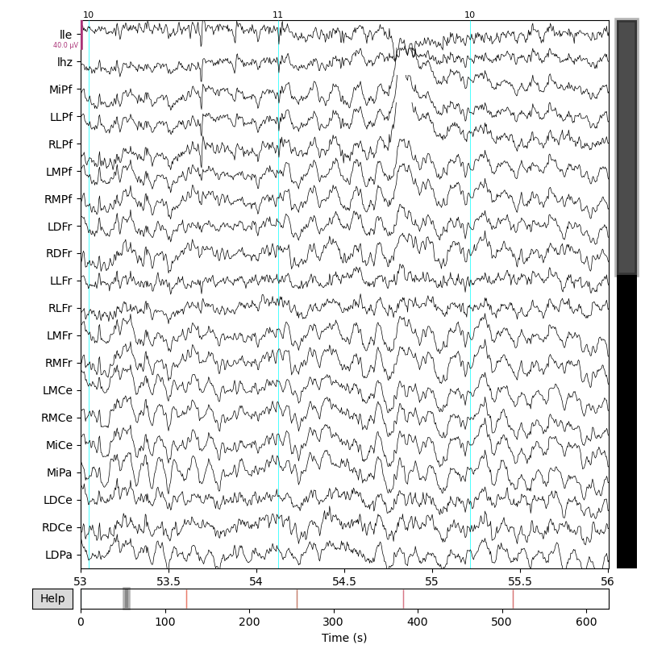
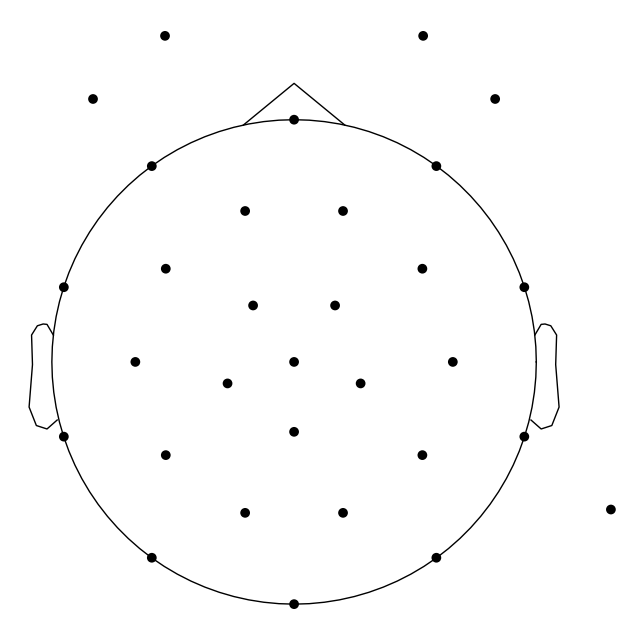

Note
Click here to download the full example code
How it works
The sample mkh5 file is for a single subject in an auditory oddball paradigm with some epochs tables previously marked.
Converting mkh5 HDF5 to MNE RawMkh5 does several things:
concatenates the separate mkh5 datablock EEG and event data channels into one long mne.Raw strip chart
populates the mne.Info structure with header info including electrode names and locations
extracts all the mkpy epochs tables from the HDF5 and packs them into the mne.Info
for each epoch table, a new “stim” event code channel is created in the mne.Raw with the name of the epochs table and all and only the events from that table.
FYI … environment and versions.
import os
import mne
import mkpy
from mkpy.io import mkh5mne
mne.viz.set_browser_backend("matplotlib") # for docs generation
print("conda env", os.environ["CONDA_DEFAULT_ENV"])
for pkg in [mkpy, mne]:
print(pkg.__name__, pkg.__version__)
Out:
conda env env_3.8
mkpy 0.2.7
mne 1.0.3
Convert the EEG and event-tagged epochs. Electrode locations are required, they can be included in the YAML .yhdr when the mkh5 file is created or added during conversion as shown.
p3_h5_f = "../mkh5_data/sub000p3.h5"
mne_raw = mkh5mne.from_mkh5(p3_h5_f, apparatus_yaml="mne_32chan_xyz_spherical.yml")
Out:
../mkh5_data/sub000p3.h5
looking up data block paths, larger files take longer ...
ok
/usr/share/miniconda/envs/env_3.8/lib/python3.8/site-packages/mkpy/io/mkh5mne.py:1190: UserWarning: Overriding /sub000/dblock_0 with sensor locations from mne_32chan_xyz_spherical.yml
warnings.warn(msg)
checking info, montage sub000/dblock_1
/usr/share/miniconda/envs/env_3.8/lib/python3.8/site-packages/mkpy/io/mkh5mne.py:1190: UserWarning: Overriding /sub000/dblock_1 with sensor locations from mne_32chan_xyz_spherical.yml
warnings.warn(msg)
checking info, montage sub000/dblock_2
/usr/share/miniconda/envs/env_3.8/lib/python3.8/site-packages/mkpy/io/mkh5mne.py:1190: UserWarning: Overriding /sub000/dblock_2 with sensor locations from mne_32chan_xyz_spherical.yml
warnings.warn(msg)
checking info, montage sub000/dblock_3
/usr/share/miniconda/envs/env_3.8/lib/python3.8/site-packages/mkpy/io/mkh5mne.py:1190: UserWarning: Overriding /sub000/dblock_3 with sensor locations from mne_32chan_xyz_spherical.yml
warnings.warn(msg)
checking info, montage sub000/dblock_4
/usr/share/miniconda/envs/env_3.8/lib/python3.8/site-packages/mkpy/io/mkh5mne.py:1190: UserWarning: Overriding /sub000/dblock_4 with sensor locations from mne_32chan_xyz_spherical.yml
warnings.warn(msg)
/usr/share/miniconda/envs/env_3.8/lib/python3.8/site-packages/mkpy/io/mkh5mne.py:1190: UserWarning: Overriding /sub000/dblock_0 with sensor locations from mne_32chan_xyz_spherical.yml
warnings.warn(msg)
Creating RawArray with float64 data, n_channels=39, n_times=31232
Range : 0 ... 31231 = 0.000 ... 124.924 secs
Ready.
/usr/share/miniconda/envs/env_3.8/lib/python3.8/site-packages/mkpy/io/mkh5mne.py:1478: RuntimeWarning: Not setting position of 1 eog channel found in montage:
['HEOG']
Consider setting the channel types to be of EEG/sEEG/ECoG/DBS/fNIRS using inst.set_channel_types before calling inst.set_montage, or omit these channels when creating your montage.
raw_dblock.set_montage(montage)
sub000/dblock_0 setting mkh5 epochs table ms100 events and metadata
sub000/dblock_0 setting mkh5 epochs table ms10000 events and metadata
sub000/dblock_0 setting mkh5 epochs table ms1500 events and metadata
sub000/dblock_0 setting mkh5 epochs table ms3000 events and metadata
/usr/share/miniconda/envs/env_3.8/lib/python3.8/site-packages/mkpy/io/mkh5mne.py:1190: UserWarning: Overriding /sub000/dblock_1 with sensor locations from mne_32chan_xyz_spherical.yml
warnings.warn(msg)
Creating RawArray with float64 data, n_channels=39, n_times=32768
Range : 0 ... 32767 = 0.000 ... 131.068 secs
Ready.
/usr/share/miniconda/envs/env_3.8/lib/python3.8/site-packages/mkpy/io/mkh5mne.py:1478: RuntimeWarning: Not setting position of 1 eog channel found in montage:
['HEOG']
Consider setting the channel types to be of EEG/sEEG/ECoG/DBS/fNIRS using inst.set_channel_types before calling inst.set_montage, or omit these channels when creating your montage.
raw_dblock.set_montage(montage)
sub000/dblock_1 setting mkh5 epochs table ms100 events and metadata
sub000/dblock_1 setting mkh5 epochs table ms10000 events and metadata
sub000/dblock_1 setting mkh5 epochs table ms1500 events and metadata
sub000/dblock_1 setting mkh5 epochs table ms3000 events and metadata
/usr/share/miniconda/envs/env_3.8/lib/python3.8/site-packages/mkpy/io/mkh5mne.py:1190: UserWarning: Overriding /sub000/dblock_2 with sensor locations from mne_32chan_xyz_spherical.yml
warnings.warn(msg)
Creating RawArray with float64 data, n_channels=39, n_times=31744
Range : 0 ... 31743 = 0.000 ... 126.972 secs
Ready.
/usr/share/miniconda/envs/env_3.8/lib/python3.8/site-packages/mkpy/io/mkh5mne.py:1478: RuntimeWarning: Not setting position of 1 eog channel found in montage:
['HEOG']
Consider setting the channel types to be of EEG/sEEG/ECoG/DBS/fNIRS using inst.set_channel_types before calling inst.set_montage, or omit these channels when creating your montage.
raw_dblock.set_montage(montage)
sub000/dblock_2 setting mkh5 epochs table ms100 events and metadata
sub000/dblock_2 setting mkh5 epochs table ms10000 events and metadata
sub000/dblock_2 setting mkh5 epochs table ms1500 events and metadata
sub000/dblock_2 setting mkh5 epochs table ms3000 events and metadata
/usr/share/miniconda/envs/env_3.8/lib/python3.8/site-packages/mkpy/io/mkh5mne.py:1190: UserWarning: Overriding /sub000/dblock_3 with sensor locations from mne_32chan_xyz_spherical.yml
warnings.warn(msg)
Creating RawArray with float64 data, n_channels=39, n_times=32512
Range : 0 ... 32511 = 0.000 ... 130.044 secs
Ready.
/usr/share/miniconda/envs/env_3.8/lib/python3.8/site-packages/mkpy/io/mkh5mne.py:1478: RuntimeWarning: Not setting position of 1 eog channel found in montage:
['HEOG']
Consider setting the channel types to be of EEG/sEEG/ECoG/DBS/fNIRS using inst.set_channel_types before calling inst.set_montage, or omit these channels when creating your montage.
raw_dblock.set_montage(montage)
sub000/dblock_3 setting mkh5 epochs table ms100 events and metadata
sub000/dblock_3 setting mkh5 epochs table ms10000 events and metadata
sub000/dblock_3 setting mkh5 epochs table ms1500 events and metadata
sub000/dblock_3 setting mkh5 epochs table ms3000 events and metadata
/usr/share/miniconda/envs/env_3.8/lib/python3.8/site-packages/mkpy/io/mkh5mne.py:1190: UserWarning: Overriding /sub000/dblock_4 with sensor locations from mne_32chan_xyz_spherical.yml
warnings.warn(msg)
Creating RawArray with float64 data, n_channels=39, n_times=28416
Range : 0 ... 28415 = 0.000 ... 113.660 secs
Ready.
/usr/share/miniconda/envs/env_3.8/lib/python3.8/site-packages/mkpy/io/mkh5mne.py:1478: RuntimeWarning: Not setting position of 1 eog channel found in montage:
['HEOG']
Consider setting the channel types to be of EEG/sEEG/ECoG/DBS/fNIRS using inst.set_channel_types before calling inst.set_montage, or omit these channels when creating your montage.
raw_dblock.set_montage(montage)
sub000/dblock_4 setting mkh5 epochs table ms100 events and metadata
sub000/dblock_4 setting mkh5 epochs table ms10000 events and metadata
sub000/dblock_4 setting mkh5 epochs table ms1500 events and metadata
sub000/dblock_4 setting mkh5 epochs table ms3000 events and metadata
EEG data marked as already having the desired reference.
When the mkh5 datablocks are knit together for MNE, the discontinuities at edges are tracked automatically as mne.Annotations
mne_raw.annotations.description
Out:
array(['sub000/dblock_0', 'sub000/dblock_1', 'BAD boundary',
'EDGE boundary', 'sub000/dblock_2', 'BAD boundary',
'EDGE boundary', 'sub000/dblock_3', 'BAD boundary',
'EDGE boundary', 'sub000/dblock_4', 'BAD boundary',
'EDGE boundary'], dtype='<U15')
The mne_raw object has the mne.Info attached. You can see the mkh5 epoch_table info peeking out of the mne.Info[“description”] field.
mne_raw.info
This RawMkh5 object can do all the usual mne.Raw tricks like plotting and writing itself to an MNE raw .fif file. %%
p3_events = mkh5mne.find_mkh5_events(mne_raw, "ms1500")
_ = mne_raw.plot(
p3_events,
start=53.0,
duration=3.0,
)
_ = mne.viz.plot_sensors(mne_raw.info)
- 
- 
Out:
Opening raw-browser...
Annotate garv artifacts (optional)
The mkh5 log_flags that indicate garv artifact events after avg
-x can be converted to BAD_garv mne.Annotations for events on
any of the event channels.
# Select the event channel to annotate ("log_evcodes" for all), then
# then add the annotations to the mne.Raw
garv_bads = mkh5mne.get_garv_bads(
mne_raw, event_channel="ms1500", tmin=-750, tmax=750, units="ms"
)
mne_raw.set_annotations(mne_raw.annotations + garv_bads)
mne_raw.annotations
Out:
<Annotations | 71 segments: BAD boundary (4), BAD_garv_32 (33), ...>
mne.Epochs codemap metadata
Use :py:meth:.`get_epochs_metadata` to extract mne.Epochs with the codemap metatdata as MNE format metata when constructing mne.Epochs.
mne_epochs = mkh5mne.get_epochs(
mne_raw,
"ms1500",
preload=True, # populate the Epochs with data and apply projections
reject_by_annotation=True, # drop the BAD_* annotations or set False to keep them
baseline=(-0.2, 0.0), # center on this interval
)
mne_epochs
Out:
Adding metadata with 40 columns
600 matching events found
Applying baseline correction (mode: mean)
0 projection items activated
Using data from preloaded Raw for 600 events and 376 original time points ...
131 bad epochs dropped
The mkh5 codemap tags are attached as native mne.Epochs.metadata
mne_epochs.metadata
find_mkh5_events()
This is a replacement for mne.find_events() that creates
the 3 column array of [sample, 0, event] used for native mne.Raw epoching and
plotting without doing wrong things like converting negative event
codes to positive.
print(garv_bads, garv_bads.description)
p3_events = mkh5mne.find_mkh5_events(mne_raw, "ms1500")
p3_events
# :py:meth:`.get_find_mkh5_events`
# ----------------------------
#
# This extracts the embedded epochs table from the RawMkh5.
metadata = mkh5mne.get_epochs_metadata(mne_raw, "ms1500")
metadata
Out:
<Annotations | 58 segments: BAD_garv_32 (33), BAD_garv_48 (25)> ['BAD_garv_48' 'BAD_garv_48' 'BAD_garv_48' 'BAD_garv_32' 'BAD_garv_48'
'BAD_garv_48' 'BAD_garv_48' 'BAD_garv_32' 'BAD_garv_48' 'BAD_garv_32'
'BAD_garv_48' 'BAD_garv_32' 'BAD_garv_32' 'BAD_garv_48' 'BAD_garv_32'
'BAD_garv_48' 'BAD_garv_48' 'BAD_garv_32' 'BAD_garv_32' 'BAD_garv_32'
'BAD_garv_48' 'BAD_garv_48' 'BAD_garv_48' 'BAD_garv_32' 'BAD_garv_48'
'BAD_garv_48' 'BAD_garv_32' 'BAD_garv_32' 'BAD_garv_32' 'BAD_garv_32'
'BAD_garv_32' 'BAD_garv_32' 'BAD_garv_32' 'BAD_garv_32' 'BAD_garv_32'
'BAD_garv_32' 'BAD_garv_32' 'BAD_garv_32' 'BAD_garv_32' 'BAD_garv_32'
'BAD_garv_32' 'BAD_garv_32' 'BAD_garv_48' 'BAD_garv_32' 'BAD_garv_48'
'BAD_garv_48' 'BAD_garv_32' 'BAD_garv_32' 'BAD_garv_32' 'BAD_garv_48'
'BAD_garv_32' 'BAD_garv_48' 'BAD_garv_32' 'BAD_garv_48' 'BAD_garv_48'
'BAD_garv_32' 'BAD_garv_48' 'BAD_garv_48']
Total running time of the script: ( 0 minutes 21.051 seconds)